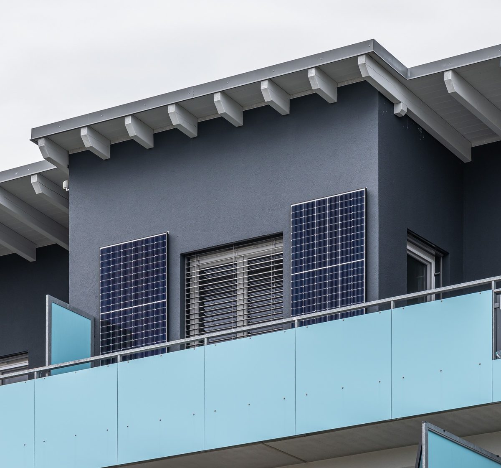

미국 캘리포니아, 콘센트에 꽂는 1.2kW 플러그인 태양광 허가 없이 허용…오클랜드시 "시민단체와 함께 알리겠다"

전력회사 PG&E "가구당 연 50~800달러 절감" 추산하면서도 법안엔 반대…지역 공공전력 기관은 "배터리도 묶었어야"
미국 캘리포니아주에서 가정용 콘센트에 꽂아 쓰는 1.2kW 이하 플러그인 태양광이 전력회사 허가나 별도 수수료 없이 합법이 되자, 오클랜드시가 시민들에게 사용법을 알리는 일에 나섰다. 개빈 뉴섬 주지사가 9월에 서명한 법에 따라 뒷마당이나 발코니에 패널을 세우고 소형 인버터를 콘센트에 꽂기만 하면 되며, 까다롭고 비용이 드는 계통연계 신청 절차도 면제된다. 오클랜드시 지속가능성 부서는 종교계 환경단체 등 지역 시민단체와 손잡고 이 기술을 주민들에게 알릴 계획이다. 전기요금이 kWh당 40센트 수준으로 높은 이 지역에서 전력회사 PG&E는 기기 크기에 따라 가구당 연 50~800달러를 아낄 수 있다고 추산했지만, 감시되지 않는 기기가 전력망 운영을 어렵게 하고 선로 작업자를 위험하게 할 수 있다며 법안에는 반대했다. 지역 공공전력 기관인 에이바 커뮤니티 에너지 쪽은 저녁 피크 시간에 쓸 수 있도록 배터리를 함께 달게 했다면 더 좋은 법이 됐을 것이라고 평가했다.
시민에너지 관점
독일에서는 발코니 태양광이 등록된 것만 100만 대를 넘겨 세입자와 아파트 주민의 대표적인 에너지 참여 수단이 됐고, 이제 미국에서 인구가 가장 많은 캘리포니아도 허가 없이 꽂아 쓰게 길을 열었다. 안전과 전력망 걱정은 기기 인증 기준과 출력 상한으로 관리할 수 있다는 것이 여러 나라의 경험이다. 지붕도 땅도 없는 시민이 자기 전기를 직접 만드는 일은 가장 작은 단위의 시민 발전소이며, 지자체가 시민단체와 함께 알리는 오클랜드의 방식은 그 확산 경로를 잘 보여 준다. 우리나라도 공동주택 베란다 태양광을 막는 규약과 절차를 걷어내고, 콘센트형 소형 태양광의 안전기준과 간편 신고 제도를 서둘러 마련해야 한다.
출처: Oakland North 2026-11-06 Monika Boyadzhieva 원문 보기
米カリフォルニア州、コンセントに差し込む1.2kWのプラグイン太陽光を許可なしで容認…オークランド市「市民団体と共に周知」
電力会社PG&Eは「1世帯あたり年50〜800ドル節約」と試算しつつ法案には反対…地域の公共電力機関は「蓄電池も組み合わせるべきだった」
米カリフォルニア州で家庭用コンセントに差し込んで使う1.2kW以下のプラグイン太陽光が、電力会社の許可や追加手数料なしで合法となったことを受け、オークランド市が市民に使い方を知らせる取り組みに乗り出した。ギャビン・ニューサム知事が9月に署名した法律により、裏庭やバルコニーにパネルを立て、小型インバーターをコンセントに差し込むだけでよく、煩雑で費用のかかる系統連系の申請手続きも免除される。オークランド市の持続可能性部門は、宗教系の環境団体など地域の市民団体と連携してこの技術を住民に広める計画だ。電気料金が1kWhあたり40セント前後と高いこの地域で、電力会社PG&Eは機器の大きさに応じて1世帯あたり年50〜800ドルを節約できると試算したが、監視されない機器が送電網の運用を難しくし、線路作業員を危険にさらしかねないとして法案には反対した。地域の公共電力機関エイバ・コミュニティ・エナジー側は、夕方のピーク時間に使えるよう蓄電池の併設を義務付けていれば、より良い法律になっただろうと評価した。
市民エネルギーの視点
ドイツではバルコニー太陽光が登録分だけで100万台を超え、賃借人やマンション住民の代表的なエネルギー参加手段となった。今や米国で人口が最も多いカリフォルニア州も許可なしで差し込んで使える道を開いた。安全や送電網への懸念は、機器の認証基準と出力上限で管理できるというのが多くの国の経験だ。屋根も土地もない市民が自分の電気を自ら作ることは最小単位の市民発電所であり、自治体が市民団体と共に周知するオークランドの方式はその広がり方をよく示している。韓国も集合住宅のベランダ太陽光を阻む規約や手続きを取り払い、コンセント型小型太陽光の安全基準と簡易届出制度を急いで整えるべきだ。
出典: Oakland North 2026-11-06 Monika Boyadzhieva 原文を読む
美国加州允许插座式1.2千瓦即插即用太阳能免许可安装，奥克兰市称将与市民团体共同推广
电力公司PG&E估算每户每年可省50至800美元却反对该法案，地方公共电力机构认为本应同时配套电池
美国加利福尼亚州允许插入家用插座使用的1.2千瓦以下即插即用太阳能设备无需电力公司许可、无需额外费用即可合法使用后，奥克兰市开始向市民介绍使用方法。根据州长加文·纽森9月签署的法律，居民只需在后院或阳台架起面板，把小型逆变器插进插座即可，繁琐且费用高昂的并网申请程序也一并免除。奥克兰市可持续发展部门计划与宗教界环保团体等地方市民团体合作，向居民推广这项技术。该地区电价约为每千瓦时40美分，电力公司PG&E估算，视设备大小每户每年可节省50至800美元，但又以无人监控的设备可能增加电网管理难度、危及线路工人安全为由反对该法案。地方公共电力机构Ava社区能源方面则认为，如果要求同时配备电池以便在傍晚用电高峰使用，这部法律会更完善。
市民能源视角
在德国，仅登记在册的阳台太阳能就已超过100万台，成为租户和公寓居民参与能源转型的代表性方式；如今美国人口最多的加州也打开了免许可即插即用的大门。多国经验表明，安全和电网方面的担忧可以通过设备认证标准和功率上限加以管理。没有屋顶和土地的市民亲手发电，就是最小单位的市民发电站，而奥克兰由地方政府与市民团体共同推广的做法，正好说明了它的扩散路径。韩国也应尽快清除阻碍公寓阳台太阳能的管理规约和程序，制定插座式小型太阳能的安全标准和简易申报制度。
来源: Oakland North 2026-11-06 Monika Boyadzhieva 查看原文
California Allows 1.2 kW Plug-In Solar Without Utility Permits; Oakland to Spread the Word With Community Groups
Utility PG&E estimates savings of $50 to $800 a year per home but opposed the bill; local public power agency says batteries should have been included
With plug-in solar devices of up to 1.2 kilowatts now legal in California without utility permits or extra fees, the city of Oakland is moving to teach residents how to use them. Under a law Governor Gavin Newsom signed in September, households can set panels up in a backyard or on a balcony and plug a small inverter into an outlet, and they are exempt from the complex and costly grid interconnection application. Oakland's sustainability office plans to work with local community organizations, including a faith-based environmental group, to raise awareness of the technology. In an area where power costs around 40 cents per kilowatt-hour, utility PG&E estimates the devices can cut a household's bill by $50 to $800 a year depending on size, yet it opposed the bill, saying unmonitored devices could make the grid harder to manage and put line workers at risk. A representative of Ava Community Energy, the local public power agency, said the law would have been stronger had it required batteries so residents could use stored solar power during the evening peak.
Citizen Energy View
In Germany, balcony solar already counts more than a million registered units and has become a leading way for tenants and apartment dwellers to take part in the energy transition, and now California, the most populous U.S. state, has opened the door to permit-free plug-in systems. Experience in many countries shows that safety and grid concerns can be managed through device certification standards and output caps. A citizen with no roof or land making their own electricity is the smallest form of a citizen power plant, and Oakland's approach of spreading the word together with community groups shows how it can grow. Korea, too, should remove the bylaws and procedures that block balcony solar in apartment complexes and quickly set safety standards and a simple notification system for plug-in solar.
Source: Oakland North 2026-11-06 Monika Boyadzhieva Read the original